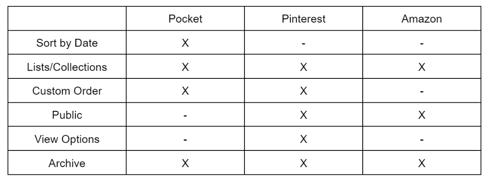

Before beginning to create my aggregator, I compared the organization, filtering, and sorting features found in the aggregators of Amazon, Pinterest, and Pocket. They are summarized in the chart below:
 AmazonAmazon, Pinterest, and Pocket all support adding items to an aggregator, specifically to a cart, board, and "saves" section, respectively. All three had features that allowed users to save their selections into groups or lists for organizational purposes, although where in the user flow this part happened -- Amazon has "add to list" functionality before adding those items to the cart, whereas Pocket, for instance, required you to move saved articles into lists after saving them generally. Only Pocket allowed for sorting saved items by date, which was a useful feature for articles, but seemed missing to me for Pins within a Board on Pinterest. After adding items to the aggregator, only Pocket and Pinterest allowed these items to be reordered to any custom configuration. All three sites offered an archive feature of some sort.
All of these features directly influence the user's mental model of how they are intended to organize their saved items. I found this analysis interesting because all of these sites have features that seem to be redundant at times, but are meant to give some structure to the user without overly constraining their organization. For example, Pocket offers the ability to tag, archive, save, and favorite articles, as well as the ability to add them to custom lists. Most of these advanced organizational features are effective, but hurts learnability in favor of efficiency. In my opinion, Amazon and Pinterest have similar tradeoffs, but do a better job of using progressive disclosure to keep these advanced features from overwhelming new users.
My Aggregator App can be found at:
LinkThis project was born out of a desire to narrow down a large number of blogs that I was interested in reading down to a handful of items on a reading list that I was particularly interested in. It is very similar to the website Pocket from my competitive analysis. I incorporated filter and sort features on the display of the article cards to help users find the articles they want to read. I allow for sorting by date, both newest and oldest, and sorting by longest or shortest in terms of word count. My application also has a filtering feature to filter by genre of article.